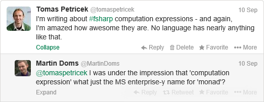

The F# Computation Expression Zoo (PADL'14)
F# computation expressions are the syntactic language mechanism that is used by features like sequence expressions and asynchronous workflows. The aim of F# computation expressions is to provide a single syntactic mechanism that provides convenient notation for writing a wide range of computations.
The syntactic mechanisms that are unified by computation expressions include Haskell do
notation and list comprehensions, C# iterators, asynchronous methods and LINQ queries,
Scala for comprehensions and Python generators to name just a few.
Some time ago, I started working on an academic article to explain what makes computation expressions unique - and I think there is quite a few interesting aspects. Sadly, this is often not very well explained and so the general perception is more like this:
This is something hat we tried to clarify in the upcoming PADL 2014 paper which explains how computation expression fit with standard abstract computation types such as monads and shows what makes them unique. If you're interested in the details, then follow the link to the paper below. In the rest of the blog post, I'll try to give a quick summary with one interesting example...
- The F# Computation Expression Zoo - To appear in PADL 2014
- Source with all examples from the paper - on TryJoinads.org
Why computation expressions are more?
There are two key things about computation expressions that make them quite different to what other languages provide - the first is emphasis on syntax (to make them look like single-purpose language features) and the second is flexibility (to make them reusable).
Syntax
Computation expressions reuse the normal syntax of the F# language, so
you can write code using standard constructs like let, for and try .. with,
but with a different semantics, depending on the kind of computation. For example,
try .. with inside async captures exceptions that happen on another thread and
propagates them, but all of this is done using standard language mechanism.
Flexibility
Computation expressions are not tied to a single abstract type of computations (e.g. monad). Instead, they give us a single syntactic mechanism, that can give a nice syntax for multiple different abstract computation types. These include monads, but also applicative functors (using a research extension), monoids, additive monads, computations constructed using monad transformers and more.
But what's the point? Aren't monad transformers and additive monads just monads?
Of course, they are monads, but they have some additional structure. For example, additive
monads have the mplus operation of type 'a m -> 'a m -> 'a m and mzero of type 'a m.
In Haskell, you can just use the do notation, but to access the additional structure,
you'll need to use the combinators, which can make the syntax more complex.
When using computation expressions, the operations like mplus and mzero become
a part of the syntax. In many cases, you will not need to call them explicitly via
a function, because they enable additional syntax in the computation expression that
calls them.
Limitations
To be fair, I should mention common criticism of computation expressions too. F# does not easily let you write code that is polymorphic over the type of computation (it can be done, but it is not particularly idiomatic and it is certainly not recommended).
If you learned about monads in Haskell, this might sound like a major issue to you. However, it is not a big problem in practice, because F# and Haskell use monads (and other computations) in very different ways. In Haskell, they are fundamental part of the language and you need them all the time. In F#, they are only used when you actually want to write some concrete computation with non-standard behaviour. For example, asynchronous computation or a formlet - in such case, you will almost always want to work with a concrete computation type. As we'll see later, this has another useful consequence - it means that the syntax of computation expressions can be tuned to a concrete use case.
Case study: Two additive monads
If you want to see all the abstractions that are supported by computation expressions, then read the paper. I will not repeat everything in this blog post.
However, I want to show one example that demonstrates the key point of computation expressions
very well. The example is encoding of additive monads - that is, computation types that
are monads and have additional operations mplus : 'a m -> 'a m -> 'a m and mzero : 'a m.
In Haskell, these are captured by the MonadPlus type class.
I'll show how computation expressions look for two different computation. The first one
is based on the list monad (although I'll use more idiomatic F# seq<'T> computations)
and the other is essentially a delayed option<'T> type (aka Maybe monad), but it more
closely models the Haskell IO instance for MonadPlus.
Sequence expressions
Let's say that we want to write a function that takes a list, such as [1; 2; 3] and
duplicates each element in the list returning [1; 1; 2; 2; 3; 3]. The syntax for doing
this is very close to the one of Python generators
and looks as follows:
1: 2: 3: 4: |
|
How does this work? The for keyword is mapped to the bind operation of the underlying
computation and the yield keyword is mapped to the return operation of the monad.
When the body contains multiple statements that return a value, the statements are combined
using the additive operation (mplus).
The syntax and semantics of the computation is determined by the seq identifier - this
is not actually an identifier, but an object that defines a number of members that tell
the compiler that 1) it should enable for, yield and multiple statements in a body
and 2) what is the implementation of the three underlying operations.
When defining the syntax in the seq value, we could have chosen another syntax - we could
use let! and return instead of using for and yield, but the latter option gives a
more convenient and intuitive syntax.
What do I mean by "more intuitive"? Let's look at the laws! The left distribution
law about MonadPlus (which holds for lists)
states that the following two computations should be equivalent:
1: 2: 3: 4: 5: 6: 7: |
|
This looks like a very reasonable law to require for any sequence or list-like computation. So, if you have a list-like computation, then this is the right syntax to use. For example, asynchronous sequences use it too.
However, what if we have a computation where the above law does not hold?
Imperative computations
Another example of additive monad are imperative computations
that I discussed in earlier article on this blog.
The aim is to let you write computations that are similar to C-like imperative control flow
with return, break and continue keywords. The following is a simple example of using
the imperative-style return - assuming we have a list of blockedWords, we want to
return true when the given message contains any word.
Of course, this could easily be written using a built-in function like List.exists, but that's
not the point - the point is that we can define computation expression that closely models
the C-like syntax and could be used to define more complex computations and implement
more complex behaviours:
1: 2: 3: 4: |
|
Again, the syntax and the semantics is determined by the imperative object. You can
find the details of the implementation in the blog post mentioned earlier.
The key thing is that the object determines that we want to use the return keyword
for the return operation of the monad.
The for loop used here is just an ordinary
loop that iterates over sequence - it is defined in terms of standard iteration over
lists and the bind operation of the monad. This is an example of the flexibility
of computation expressions - because they are used with specific computations, it makes
sense to design them so that they give us the most intuitive syntax (here, resembling
C-like imperative computations).
Interestingly, imperative computations do not obey the left distribution law that worked for sequences, but instead, they obey the left catch law. The law statest that the following two computations are equivalent:
1: 2: 3: 4: 5: 6: |
|
In the original formulation of the law, the expression following return 0 in the left
expression can be anything - but calling printfn is completely sufficient for this
quick overview.
It is not surprising that the law holds for imperative computations. So again, the law
nicely accompanies the syntax that we have chosen when defining the imperative computation
builder (the imperative value). If we used the yield keyword in this example, or
if we used return in the previous one (sequences), then there would be a mismatch between
the syntax and the laws.
MonadPlus versus MonadOr
Interestingly, the distinction between the two sample computations that I used in the
previous examples exists in Haskell too. The MonadPlus reform proposal
suggests that computations satisfying left distribution should form a type class
MonadPlus, while computations satisfying left catch should be captured by MonadOr.
Having two different type classes would mean that you'd explicitly use one of the
two combinators - either mplus or morelse and so the resulting Haskell code would
be somewhat less generic over the type of computation and a bit closer to what you get with
F# computation expression encoding of additive monads.
I believe it is interesting that you can discover this important distinction from multiple directions - by considering the laws, or by looking at the most natural syntax for writing such computations.
Summary
This blog post is a quick (and over-simplified) overview of what you can find in our paper The F# Computation Expression Zoo that has been accepted at the PADL workshop 2014.
I tried to give two simple examples that demonstrate the main points:
-
Syntax matters - computation expressions aim to match with built-in language features like Python generators and so the ability to choose the right syntax is crucial. However, this is done without full support for macros. While macros can achieve this too, they tend to be too powerful.
-
Expressivity - the author of a computation should be able to decide how the computation looks and define more operations (e.g. to support multiple
yieldconstructs) if the computation type allows this.
Another point of this article is to show that computation expressions are not, in fact, just an "enterprise-y name for monad". Firstly, they are based on quite different principles and, secondly, they can capture wider range of computations (including additive monads and monad transformers) and leverage the additional operations available in these computations.
The slogan of the last feature could be require less, leverage more. In the research extension available on TryJoinads.org, you can use computation expressions even if you have just applicative functor. But if you have more - say, a monad or even additive monad - then the additional structure enables more syntactic options and so you do not need to resort to explicit use of combinators as often.
Full name: Computation-zoo-padl.Imperative<_>
Full name: Microsoft.FSharp.Core.unit
Full name: Microsoft.FSharp.Core.option<_>
type ImperativeBuilder =
new : unit -> ImperativeBuilder
member Combine : a:(unit -> 'h option) * b:(unit -> 'h option) -> (unit -> 'h option)
member Delay : f:(unit -> Imperative<'g>) -> Imperative<'g>
member For : inp:seq<'b> * f:('b -> unit -> 'c option) -> (unit -> 'c option)
member Return : v:'f -> Imperative<'f>
member Run : imp:(unit -> 'd option) -> 'd
member While : gd:(unit -> bool) * body:(unit -> 'a option) -> (unit -> 'a option)
member Zero : unit -> (unit -> 'e option)
Full name: Computation-zoo-padl.ImperativeBuilder
--------------------
new : unit -> ImperativeBuilder
Full name: Computation-zoo-padl.ImperativeBuilder.Combine
Full name: Computation-zoo-padl.ImperativeBuilder.Delay
Full name: Computation-zoo-padl.ImperativeBuilder.Return
Full name: Computation-zoo-padl.ImperativeBuilder.Zero
Full name: Computation-zoo-padl.ImperativeBuilder.Run
Full name: Microsoft.FSharp.Core.Operators.failwith
Full name: Computation-zoo-padl.ImperativeBuilder.For
val seq : sequence:seq<'T> -> seq<'T>
Full name: Microsoft.FSharp.Core.Operators.seq
--------------------
type seq<'T> = IEnumerable<'T>
Full name: Microsoft.FSharp.Collections.seq<_>
member Current : 'T
Full name: System.Collections.Generic.IEnumerator<_>
Full name: Microsoft.FSharp.Core.Operators.not
Full name: Computation-zoo-padl.ImperativeBuilder.While
Full name: Computation-zoo-padl.imperative
Full name: Computation-zoo-padl.blockedWords
Full name: Computation-zoo-padl.duplicate
Full name: Computation-zoo-padl.left
Full name: Computation-zoo-padl.right
Full name: Computation-zoo-padl.blockMessage
val string : value:'T -> string
Full name: Microsoft.FSharp.Core.Operators.string
--------------------
type string = String
Full name: Microsoft.FSharp.Core.string
Full name: Computation-zoo-padl.left
Full name: Microsoft.FSharp.Core.ExtraTopLevelOperators.printfn
Full name: Computation-zoo-padl.right
Published: Friday, 8 November 2013, 6:42 AM
Author: Tomas Petricek
Typos: Send me a pull request!
Tags: haskell, research, f#, functional programming